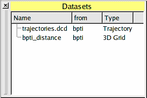
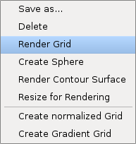
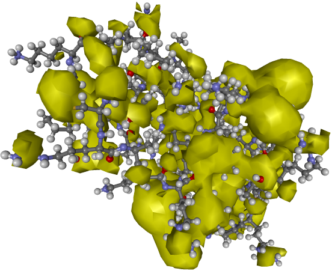
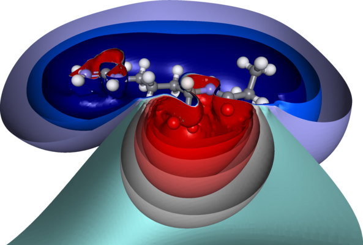
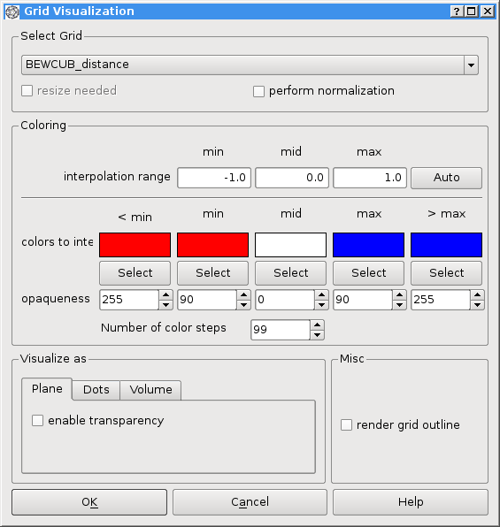
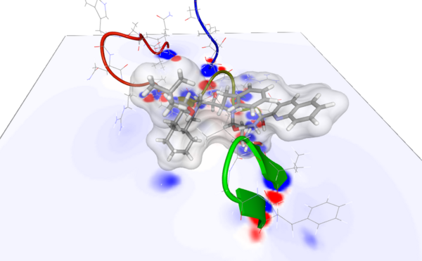
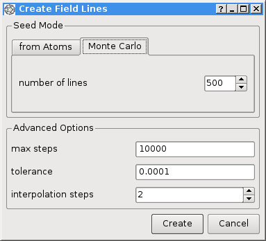
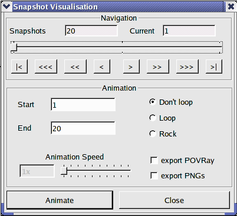

DatasetControl

The DatasetControl enables the user to manage scalar and vector grids (e.g. for potential fields),
docking results, and trajectories.
All these items can be loaded and saved as files.
To switch the visibility of the DatasetControl, the menu entry Windows-DatasetControl can be used.
To operate on one of its items, the item must be highlighted.
Then a context menu can be opened with the right mouse button.
The functionality to open the above data types are available through the menu entry File-Open.
To read a trajectory, the system to which it is bound, has to be highlighted.
Then the menu entry "File-Open-Trajectory" can be used.
Calculate a potential field
BALLView supports the calculation of molecular potential fields through its integrated
Finite Difference Boisson Bolzmann Solver (FDPB).
Before a structure is ready for this feature, any missing (hydrogen) atoms must be added and
the molecule's charges must be assigned. The later can be done through a single point
energy calculation (Molecular Mechanics-Single Point Energy).
Then highlight the System in the MolecularControl and open the FDPB dialog with the menu
entry "Tools->FDPB Electrostatics". The resulting dialog allow all kind of settings.
Maybe the most important is the "spacing", since it determines the resolution of the resulting
grid. Be careful about to small values, since your computer may then run out of memory.
When a user starts the calculation with the "OK" button, the
potenial field is stored as a threedimenisonal grid in the DatasetControl.
Visualize datasets
BALLView offers a variety of different methods to visualize three-dimensional data grids, e.g.
from potential fields.
To visualize a 3D grid, it must be loaded into the DatasetControl and the corresponding entry
must be highlighted.
Then a context menu can be opened with the right mouse button.

Create isocontour surfaces
The dialog for creating the isocontour surface is opened by clicking on the menu entry "Tools-Contour Surface" or through the corresponding context menu entry.

On the upper half, the user can select the grid. In the lower half the threshold for the isocontour surface can be set.
The color can be freely selected by clicking on the button "Edit" and using the color selection dialog.
A possible result can be seen below.

Remember that you can also create multiple isosurfaces with differing values and colors and slice
them open with a clipping plane.

Volume rendering and coloring of user-defined planes
The dialog for this functionality is opened by using the context-menu of the DatasetControl
(see above).

Due to some OpenGL internals, the used data grids must have size of 2^X for all
three dimensions. If a grid does not fullfil this constraint, it is automatically resized to
the next fitting size. An other constraint of the current implementation is that for
every grid only one OpenGL texture can be created. Please keep this in mind when you create
multiple volume visualizations for one grid. The following two images show an example for
the volume and plane visualizations. Remember that the planes can be freely replace by
using the move mode. To do so, the plane's representation must be highlighted in the GeomtricControl.


Visualize field lines
BALLView sipports the rendering of field lines for vector grids. To create a vector grid
from a scalar grid, use the context menu of the DatasetControl.
Then, highlight the entry for new vector grid. Now the context menu provides an entry
"Visualize VectorGrid". This opens the following dialog:

While the path of a field line is determined by the vector field, there are many different ways
for controlling the distribution of field lines in
three-dimensional space.
Therefore, we implemented two distinct ways for calculating the starting positions of the individual
field lines.
The first approach generates a number of equidistant points for every individual atom.
Each point becomes the start position for one field line.
Next, we implemented an approach that was described by
Stalling et al.,
in which the line placement is based on the electrostatic field strength.
The data grid is divided into equally sized cubes and the probability for one field line
to start in any given cube is proportional to the strength of the field in that cube.
The exact three-dimensional position in the cube is then randomly chosen.
This approach provides a good overview of a field's strength, since it directly corresponds to the spatial field
line density.

To obtain further informations on the potential field's characteristics, BALLView supports
the coloring of individual field lines with respect to the electrostatic potential.
To achieve best results, users can freely choose the colors and interpolation values or
use transparency.
Visualize Trajectories
To visualize a trajectory, it has to be loaded into the DatasetControl. When it is highlighted, the context menu entry "Visualize/Export" opens the following dialog:

The arrow buttons on the top are for navigation between the snapshots. The user can also drag the slider.
The checkboxes in the lower right corner enable the user to export images, either directly in the PNG format,
or write POV-Ray files for usage with the external renderer.
The resulting images can be used to create movies.
Caveat: The visualization of a trajectory, which is not loaded into memory can become quiet slow, to enhance performance it is advisable to use the context menu entry "Load into RAM".
|